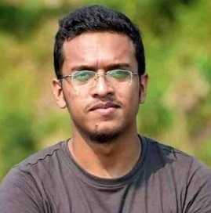

PRINT MEMORIAL · DLA · JULY 2024 ARCHIVE
আবরার ফাহাদ রাব্বি · 12 February 1998 - 7 October 2019
"His question still echoes: why must we give our own to light another's lamp?"
Abrar Fahad Rabbi (আবরার ফাহাদ রাব্বি) - known as Rabbi to family
12 February 1998, Kushtia - village home Kumarkhali
Father: Barkatullah (BRAC inspection officer)
Mother: Rokaya Khatun (kindergarten teacher)
Younger brother: Abrar Fayaz - admitted to BUET Mechanical, 2022
Kushtia Mission Primary → Kushtia Zilla School → Notre Dame College (Science)
BUET, Dept. of Electrical & Electronic Engineering (2018, 2nd year)
Returned to Sher-e-Bangla Hall for exams. That night, in room 2011, at least 20 Chhatra League leaders beat him for hours over his Facebook posts criticizing Bangladesh-India deals. Pronounced dead at 3:00 AM, 7 October. Autopsy: blunt-force beating.
Kushtia
Hours before his death, Abrar questioned three India-Bangladesh deals: giving India access to the Mongla and Chittagong ports; granting India Feni river water while Indian states refuse sharing among themselves; and importing LNG when gas shortages idle our own factories. He closed with Tagore's couplet:
"পরের কারণে স্বার্থ দিয়া বলি
এ জীবন মন সকলি দাও,
তার মত সুখ কোথাও কি আছে
আপনার কথা ভুলিয়া যাও।"
That post - and that question - made him a symbol. The full justice timeline, his legacy, and the response his death sparked are below - his killing seeded the resistance that grew into the July 2024 uprising.
Pronounced dead at Sher-e-Bangla Hall ground floor; CCTV had recorded him being dragged down the corridor hours earlier. His father Barkatullah files a murder case against 19 at Chawkbazar police station.
BUET students rise with 10 demands - maximum punishment, lifetime expulsion of killers, ban on campus student politics, CCTV in every hall. Protests spread to Dhaka University, Jahangirnagar, Islamic University, Khulna, Rajshahi, SUST and beyond; human chains in 13+ districts.
BUET administration lifetime-expels 26 students over the killing, bans organizational student politics on campus, promises case costs, compensation, CCTV and an online complaint platform.
Detective Branch submits the chargesheet: 25 accused. The case goes to the speediest tribunal with a 135-day trial clock.
Judge Abu Jafar Kamruzzaman (Dhaka 1st Speediest Tribunal): 20 sentenced to death - including BUET Chhatra League general secretary Mehedee Hasan Russel and information secretary Onik Sarker - and 5 to life imprisonment. Three remain fugitives: Morsheduzzaman Jisan, Ehteshamul Rabbi Tanim, Mostoba Rafid. The court finds the accused conspired and killed Fahad over fabricated Shibir allegations.
The High Court - Justice Syed Enayet Hosain and Justice AKM Asaduzzaman - upholds 20 death sentences and 5 life terms; full verdict released 3 May 2025.
Bangladesh's highest civilian honor, posthumous - in the new "Rebellious Youth" (প্রতিবাদী তারুণ্য) category, conferred 25 March 2025.
Dhaka's Bangabandhu Avenue renamed for him on 25 March 2025.
Kushtia Stadium renamed, 2025 - in the district where he was born.
7 October, the day he was killed, declared a national day of remembrance (October 2025), alongside the Eight Pillars Against Aggression monument at Palashi intersection and his memorial plaque at Sher-e-Bangla Hall.
A short film (October 2024) named for the hall room where he was killed, on his death, student politics and free expression.
চেতনায় আবরার ফাহাদ (Farzana Boby Chumki, Mahakal, 2025 - unveiled at the Ekushey Book Fair), the essay collection গাজা থেকে বাংলাদেশ, and Mita Ali's novel আকর (2025).
The 10-point movement forced real change: lifetime expulsions, the campus ban on organizational student politics, hall CCTV, and a public complaint platform - demands students had raised for years.
His killing ignited the deepest student movement since 2018 and planted the seeds of what grew into the July 2024 uprising. Five years later, his batchmates laid the memorial cornerstone at Palashi on his 5th death anniversary.
The United Nations demanded a proper investigation; the US, UK, Germany and France expressed shock and pressed for justice. AFP, Reuters, BBC, Al Jazeera, the New York Times, the Washington Post and the Guardian all covered the killing - most attributing it to his criticism of Bangladesh-India deals.
"Someone so outspoken yet so gentle. Someone so bright yet so modest. Someone who said what needed to be said and paid the highest price for it. To his memory we cherish. To his name we look forward."
"অপশক্তির বিরুদ্ধে আমজনতার সবচেয়ে বড় শক্তি হলো স্মৃতির শক্তি। ... আমরা বুয়েট ১৭ ব্যাচের পক্ষ হতে আর কিছুই না, শুধু আপনার বিস্মৃতির বিরুদ্ধে যুদ্ধ করছি।" - the archive keeps his blogs, photos, videos, news and a day-by-day account of 6-16 October 2019.
Visit the archive →Generated from dla-website/july.html#abrar-fahad · print format A4.